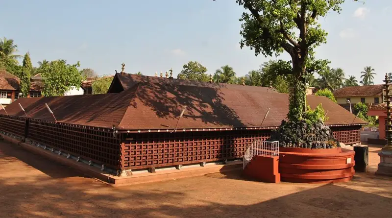
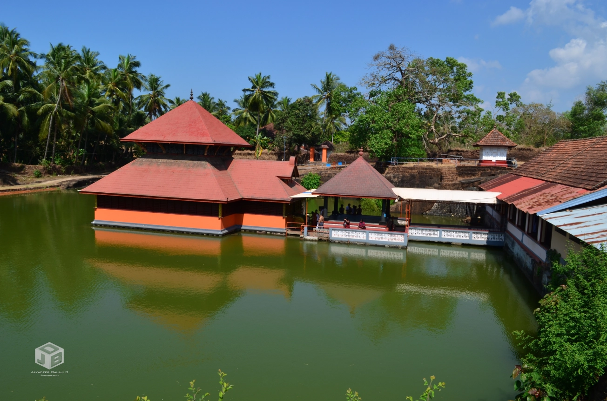

KASARGODE

Kasaragod, Or Casrod in Tulu, formerly known in English as Kassergode, and Malayalam as Kanhirakode, is a municipal town and administrative headquarters of Kasaragod district in the state of Kerala, India. Established in 1966, Kasaragod was the first municipal town in the district
Top Tourist places in Kasargode
Ranipuram Hills

Ranipuram Hills is located at Kannur city in the Kasaragod district of Kerala State, India. The nearest railway station Kanhangad about 45 km away from Ranipuram Hills.
If travel through airlines the nearest airport is from Mangalore International Airport (Karnataka) is about 125 km to Ranipuram Hills. It is situated 750 m above sea level looks awesome.
It makes for a perfect picnic spot where one can even come across the occasional herd of elephants with family.
Once known as Madathumala, it borders Karnataka and boasts of some of the best trekking trails in the area can enjoy with friends a lot.
Regular buses are available to this route by local transportation’s and jeep rides are another favorite among all our visitors.
The versatile vegetation that includes evergreen shola woods attracts tourist with rich vegetation, monsoon forests and grasslands make it a good place to relax and take some time off from the rigors of daily life.
Srimath Anantheshwar Temple Hills
Srimath Anantheshwar Temple is located at Manjeshwar in Kasaragod district of Kerala state, India.
Srimath Anantheshwar Temple is also known as Manjulakshetra. Srimath Anantheshwar Temple is situated 17 Kilometres south of Mangalore on the Cochin Mangalore section of the Southern Railway, the Temple is about a Kilometre and a half from the nearby Railway Station, being easily accessible by metalled road.
If by road, it is about 23 Kilometres south of Mangalore on the National Highway 66. One of the nearest Airport is Mangalore if you travel by airlines.
The temple is old one most of tourists visits here for holy inspiration as visible at the bottom is the granite Shivalinga of Srimath Anantheshwara after whom the temple is named.
This Linga is considered self-emerged (Swayambhoo), hence is famed and most Hindu devotees visits over here.
Aananthapura Lake Temple
Aananthapura Lake Temple is located at KANNUR, Ananthpura, Kumbla (Kumble) in Manjeswaram taluk of Kasaragod District of Kerala, South India.
It takes around 6 km from the town of Kumbla so that can easily reach to this temple by using local transport.
The nearest major railway station to Ananthapura Lake Temple is Kasaragod railway station which takes about 12 km from here. There is also a railway station at Kumbala can easily reach to this temple.
The temple design is unique in its structural aspects for it is erected in the middle of an impressive lake of 302 feet, looks awesome at lake shore.